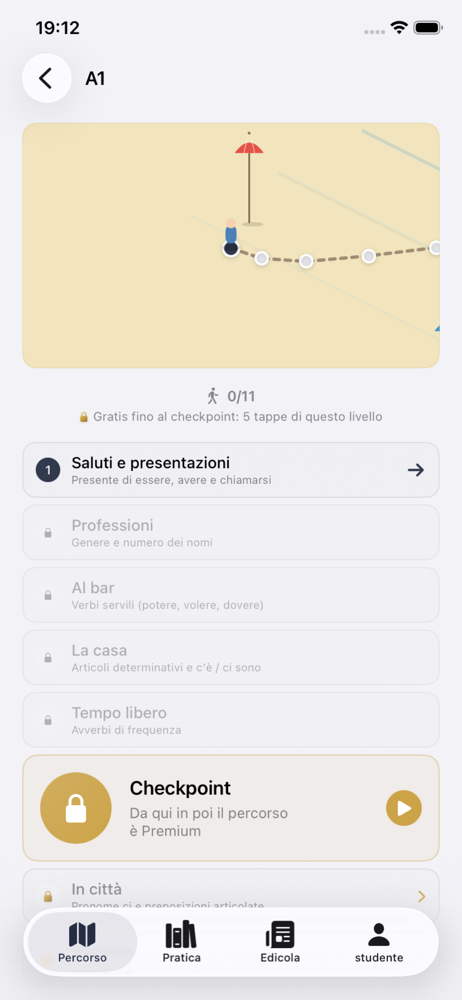
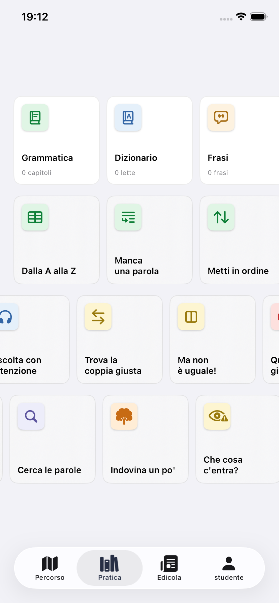
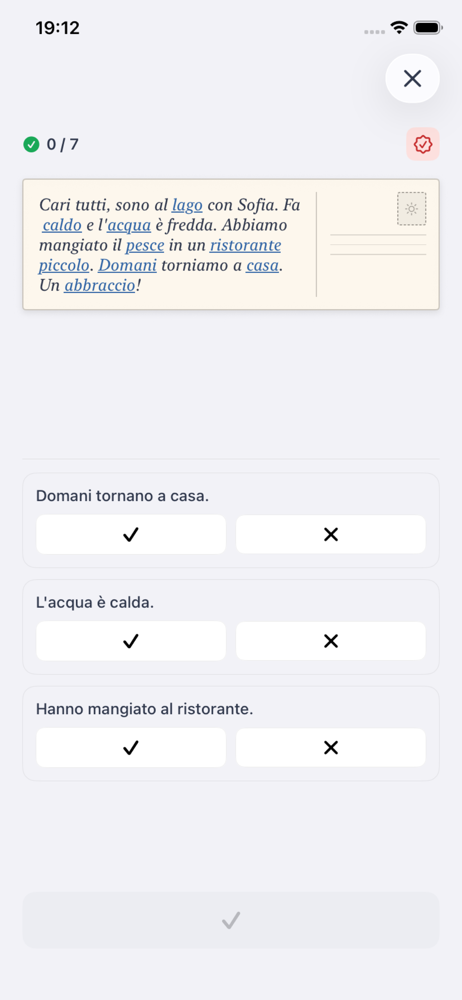
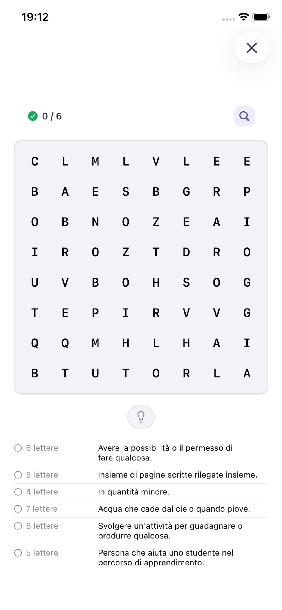
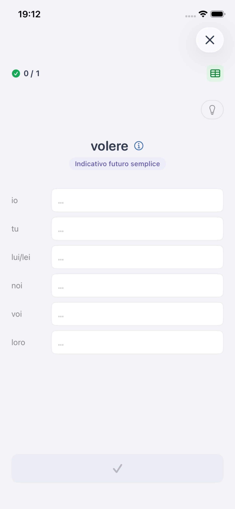

Люблю тебе. Навчу тебе.
Вивчайте італійську — від першого слова до Данте.
Ti — iOS-додаток для іноземців та мігрантів, які хочуть вивчити справжню італійську — ту, якою розмовляють у поштовому відділенні, у кав'ярні, на співбесіді для громадянства. Усе пояснено вашою мовою.
Чому Ti — це інше
Ви, напевно, пробували Duolingo. Може, Babbel. Вони гарні — для туристів. Ti створено для тих, хто живе (або збирається жити) в Італії.
Від справжнього викладача
Ti розробив Алессіо, викладач італійської з роками досвіду в класі — не ігрова студія.
CEFR з першого дня
Ті самі шість рівнів (A1 → C2), що й в університетах, роботодавців і тесті на громадянство.
Ваша мова першою
Усі пояснення українською, арабською, китайською, бенгалі, тагалог, і ще 9 мовами.
Що всередині Ti
Шлях за CEFR
Шість рівнів, десятки етапів. Лексика, граматика, аудіювання та читання на чіткій мапі.
Тематичний кіоск
Справжні читання: культура, їжа, кіно, актуальні події — завжди на вашому рівні.
Градовані класики
Читайте Піранделло, Кальвіно, Мандзоні в адаптаціях, що ростуть разом з вами.
Словник 14 мовами
Понад 3.000 слів з перекладами, прикладами та автентичним аудіо.
Ігри та вправи
Кросворди, парування, диктанти. Нудна частина стала грою.
Автентичне аудіо
Кожне слово та діалог записані, щоб ви чули справжню італійську.
Шість рівнів, один чіткий шлях
Де б ви не починали, ви завжди знаєте, що далі.
Виживання
Замовити каву, представитися, прості запитання.
Впоратися
Формальності, анкети, прийоми. Рівень громадянства.
Керувати
Робота, школа, соціальне життя італійською.
Обговорювати
Дебати, пояснення, розуміння новин і ТБ.
Нюанси
Ідіоми, регістр, література, абстрактні теми.
Володіння
Майже носій. Данте, контракти, діалекти та жарти.
Часті запитання
Ti безкоштовний?
Можна почати безкоштовно. Просунуті рівні та деякі функції — у невеликому платному плані (місячному, річному або довічному).
Ti підходить для тесту на італійське громадянство?
Так. Рівень A2 (CILS) охоплює необхідну лексику та граматику.
Чи потрібно знати італійську?
Ні. Починайте з A1. Усе пояснюється спочатку українською, потім італійською.
Які мови підтримує Ti?
Чотирнадцять: українська, англійська, іспанська, французька, німецька, португальська, нідерландська, румунська, албанська, китайська, арабська, тагалог, бенгалі, тигринья.
Це лише для тих, хто в Італії?
Ні — працює будь-де. Але контент адаптований до реального життя в Італії.
See Ti in action
The CEFR path, exercises, edicola and graded Italian classics — from A1 to C2, in 14 languages.







